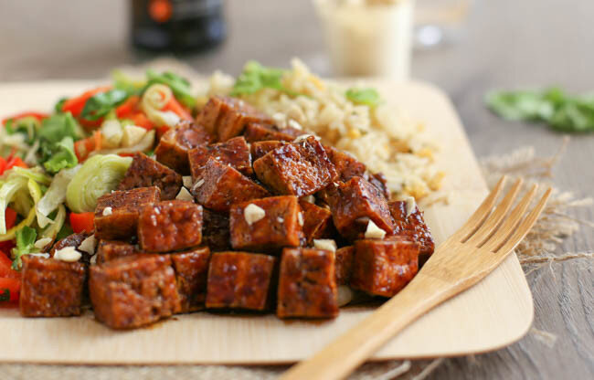

All eyes on...[2]

[ via amuse-your-bouche.com ]
It's that time again!! Recipes I'm drooling over this week.
these savory curry granola bars. savory bars whaaaat?!
this slow cooker saag. slow cookers<3.
these sunflower seed protein balls. prettyyyyy.
this low carb cake batter spread sandwich. what the actual heck.
this wonderfully creamy kabocha squash mash. because kabocha.
this thai lentil vegan meatloaf. with an apricot glaze?! i'm done.
this honey soy tofu. mmmmm.
this vegan pear pumpkin gingerbread loaf. much comfort.
these chocolate chip coconut freezer pies. so cute!
this beautiful roasted butternut squash salad. simple and omg.
this baked pear, chocolate, hazelnut oatmeal. ahhh the flavors!!
these vegan thanksgiving wraps. dreamyyyy.
[ this is everything I currently have my eyes on. leave any links you’re currently loving, below! ]